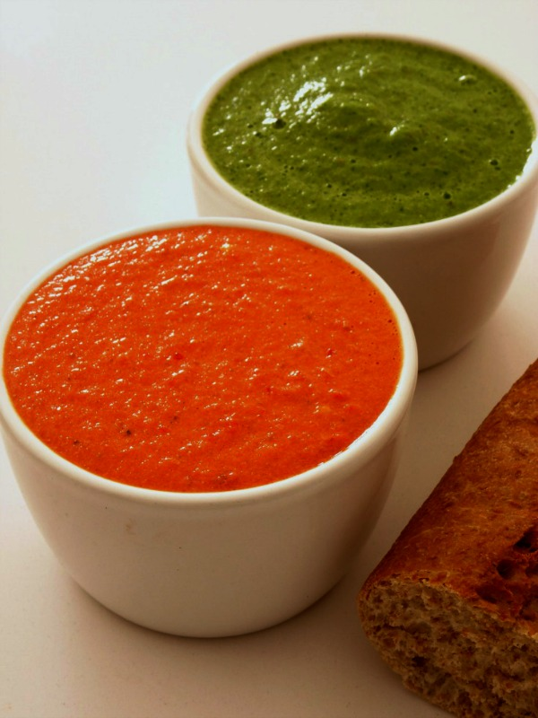

MOJO SAUCE

Description
This is the recipe of a typical sauce from the Canary Islands called mojo which is usually served with fish, wrinkled potatoes and even baked cheese.
There are two different kinds of mojo: mojo verde and mojo picón. We will be cooking mojo picón.
Ingredients
- 1 head of garlic
- 2-4 cili peppers
- 1 bell pepper
- 5 tablespoons olive oil
- 2 tablespoons wine vinegar
- 1 teaspoon groun cumin
- Salt to taste
Steps
- Make a paste in a mortar from the garlic cloves, the peppers, the cumin and the salt
- Add slowly the vinegar and the olive oil unti it transforms in a suace that has the consistency of a paste
- You can add more or fewer peppers according to your taste
- Enjoy!